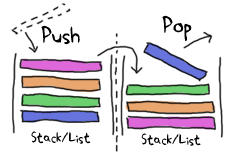
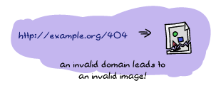

Type Specifications and Erlang
PLTs Are The Best Sandwiches
Back in Types (or lack thereof), I introduced Dialyzer, a tool to find type errors in Erlang. This chapter puts its full focus on Dialyzer and how to actually find some type errors with Erlang, and how to use the tool to find other types of discrepancies. We'll start by seeing why Dialyzer was created, then what the guiding principles behind it are and its capabilities to find type-related errors, and finally, a few examples of it in use.
Dialyzer is a very effective tool when it comes to analyzing Erlang code. It's used to find all kinds of discrepancies, such as code that will never be executed, but its main use is usually centered around finding type errors in your Erlang code base.
Before seeing much of it, we'll create Dialyzer's Persistent Lookup Table (PLT), which is a compilation of all the details Dialyzer can identify about the applications and modules that are part of your standard Erlang distribution, and code outside of OTP too. It takes quite a while to compile everything, especially if you're running it on a platform that has no native compilation through HiPE (namely Windows), or on older versions of Erlang. Fortunately things tend to get faster with time, and the newest versions of Erlang in newer releases (R15B02 onward) are getting parallel Dialyzer to make things even faster. Enter the following command into a terminal, and let it run as long as it needs:
$ dialyzer --build_plt --apps erts kernel stdlib crypto mnesia sasl common_test eunit Compiling some key modules to native code... done in 1m19.99s Creating PLT /Users/ferd/.dialyzer_plt ... eunit_test.erl:302: Call to missing or unexported function eunit_test:nonexisting_function/0 Unknown functions: compile:file/2 compile:forms/2 ... xref:stop/1 Unknown types: compile:option/0 done in 6m39.15s done (warnings were emitted)
This command builds the PLT by specifying which OTP applications we want to include in it. You can ignore the warnings if you want, as Dialyzer can deal with unknown functions when looking for type errors. We'll see why when we get to discuss how its type inference algorithm works, later in the chapter. Some Windows users will see an error message saying "The HOME environment variable needs to be set so that Dialyzer knows where to find the default PLT". This is because Windows doesn't always come with the HOME environment variable set, and Dialyzer doesn't know where to dump the PLT. Set the variable to wherever you want Dialyzer to place its files.
If you want, you can add applications like ssl or reltool by adding them to the sequence that follows --apps, or if your PLT is already built, by calling:
$ dialyzer --add_to_plt --apps ssl reltool
If you want to add your own applications or modules to the PLT, you can do so by using -r Directories, which will look for all .erl or .beam files (as long as they're compiled with debug_info) to add them to the PLT.
Moreover, Dialyzer lets you have many PLTs by specifying them with the --plt Name option in any of the commands you do, and pick a specific PLT. Alternatively, if you built many disjoint PLTs where none of the included modules are shared between PLTs, you can 'merge' them by using --plts Name1 Name2 ... NameN. This is especially useful when you want to have different PLTs in your system for different projects or different Erlang versions. The downside of this is that information obtained from merged PLTs is not as precise as if all information was contained in a single one to begin with.
While the PLT is still building, we should get acquainted with Dialyzer's mechanism to find type errors.
Success Typing
As it is the case with most other dynamic programming languages, Erlang programs are always at risk of suffering from type errors. A programmer passes in some arguments to a function he shouldn't have, and maybe he forgot to test things properly. The program gets deployed, and everything seems to be going okay. Then at four in the morning, your company's operations guy's cell phone starts ringing because your piece of software is repeatedly crashing, enough that the supervisors can't cope with the sheer weight of your mistakes.
The next morning, you get at the office, and you find your computer has been reformatted, your car gets keyed, and your commit rights have been revoked, all by the operations guy who has had enough of you accidentally controlling his work schedule.
That entire debacle could have been prevented by a compiler that has a static type analyzer to verify programs before they run. While Erlang doesn't crave a type system as much as other dynamic languages, thanks to its reactive approach to run-time errors, it is definitely nice to benefit from the additional safety usually provided by early type-related error discovery.
Usually, languages with static type systems get to be designed that way. The semantics of the language is heavily influenced by their type systems in what they allow and don't allow. For example, a function such as:
foo(X) when is_integer(X) -> X + 1; foo(X) -> list_to_atom(X).
Most type systems are unable to properly represent the types of the function above. They can see that it can take an integer or a list and return an integer or an atom, but they won't track the dependency between the input type of the function and its output type (conditional types and intersection types are able to, but they can be verbose). This means that writing such functions, which is entirely normal in Erlang, can result in some uncertainty for the type analyzer when these functions get used later on in the code.
Generally speaking, analyzers will want to actually prove that there will be no type errors at run time, as in mathematically prove. This means that in a few circumstances, the type checker will disallow certain practically valid operations for the sake of removing uncertainty that could lead to crashes.
Implementing such a type system would likely mean forcing Erlang to change its semantics. The problem is that by the time Dialyzer came around, Erlang was already well in use for very large projects. For any tool like Dialyzer to be accepted, it needed to respect Erlang's philosophies. If Erlang allows pure nonsense in its types that can only be solved at run time, so be it. The type checker doesn't have a right to complain. No programmer likes a tool that tells him his program cannot run when it has been doing so in production for a few months already!
The other option is then to have a type system that will not prove the absence of errors, but will do a best effort at detecting whatever it can. You can make such detection really good, but it will never be perfect. It's a tradeoff to be made.
Dialyzer's type system thus made the decision not to prove that a program is error-free when it comes to types, but only to find as many errors as possible without ever contradicting what happens in the real world:
Our main goal is to make uncover the implicit type information in Erlang code and make it explicitly available in programs. Because of the sizes of typical Erlang applications, the type inference should be completely automatic and faithfully respect the operational semantics of the language. Moreover, it should impose no code rewrites of any kind. The reason for this is simple. Rewriting, often safety critical, applications consisting of hundreds of thousand lines of code just to satisfy a type inferencer is not an option which will enjoy much success. However, large software applications have to be maintained, and often not by their original authors. By automatically revealing the type information that is already present, we provide automatic documentation that can evolve together with the program and will not rot. We also think that it is important to achieve a balance between precision and readability. Last but not least, the inferred typings should never be wrong.
As the Success Typings paper behind Dialyzer explains it, a type checker for a language like Erlang should work without type declarations being there (although it accepts hints), should be simple and readable, should adapt to the language (and not the other way around), and only complain on type errors that would guarantee a crash.
Dialyzer thus begins each analysis optimistically assuming that all functions are good. It will see them as always succeeding, accepting anything, and possibly returning anything. No matter how an unknown function is used, it's a good way to use it. This is why warnings about unknown functions are not a big deal when generating PLTs. It's all good anyway; Dialyzer is a natural optimist when it comes to type inference.
As the analysis goes, Dialyzer gets to know your functions better and better. As it does so, it can analyze the code and see some interesting things. Say one of your functions has a + operator between both of its arguments and that it returns the value of the addition. Dialyzer no longer assumes that the function takes anything and returns anything, but will now expect the arguments to be numbers (either integers or floating point values), and the returned values will similarly be numbers. This function will have a basic type associated to it saying that it accepts two numbers and returns a number.
Now let's say one of your functions calls the one described above with an atom and a number. Dialyzer will think about the code and say "wait a minute, you can't use an atom and a number with the + operator!" It will then freak out because where the function could return a number before, it can not return anything given how you use it.
In more general circumstances, though, you might see Dialyzer keep silent on many things that you know will sometimes cause an error. Take for example a snippet of code looking a bit like this:
main() ->
X = case fetch() of
1 -> some_atom;
2 -> 3.14
end,
convert(X).
convert(X) when is_atom(X) -> {atom, X}.
This bit of code assumes the existence of a fetch/0 function that returns either 1 or 2. Based on this, we either return an atom or a floating point number.
From our point of view, it appears that at some point in time, the call to convert/1 will fail. We'd likely expect a type error there whenever fetch() returns 2, which sends a floating point value to convert/1. Dialyzer doesn't think so. Remember, Dialyzer is optimistic. It has figurative faith in your code, and because there is the possibility that the function call to convert/1 succeeds at some point, Dialyzer will keep silent. No type error is reported in this case.
Type Inference and Discrepancies
For a practical example of the principles above, let's try Dialyzer on a few modules. The modules are discrep1.erl, discrep2.erl, and discrep3.erl. They're evolutions of each other. Here's the first one:
-module(discrep1). -export([run/0]). run() -> some_op(5, you). some_op(A, B) -> A + B.
The error in that one is kind of obvious. You can't add 5 to the you atom. We can try Dialyzer on that piece of code, assuming the PLT has been created:
$ dialyzer discrep1.erl Checking whether the PLT /home/ferd/.dialyzer_plt is up-to-date... yes Proceeding with analysis... discrep1.erl:4: Function run/0 has no local return discrep1.erl:4: The call discrep1:some_op(5,'you') will never return since it differs in the 2nd argument from the success typing arguments: (number(),number()) discrep1.erl:6: Function some_op/2 has no local return discrep1.erl:6: The call erlang:'+'(A::5,B::'you') will never return since it differs in the 2nd argument from the success typing arguments: (number(),number()) done in 0m0.62s done (warnings were emitted)
Oh bloody fun, Dialyzer found stuff. What the hell does it mean? The first one is an error you will see happening a lot of times using Dialyzer. 'Function Name/Arity has no local return' is the standard Dialyzer warning emitted whenever a function provably doesn't return anything (other than perhaps raising an exception) because one of the function it calls happens to trip Dialyzer's type error detector or raises an exception itself. When such a thing happens, the set of possible types of values the function could return is empty; it doesn't actually return. This error propagates to the function that called it, giving us the 'no local return' error.
The second error is somewhat more understandable. It says that calling some_op(5, 'you') breaks what Dialyzer detected would be the types required to make the function work, which is two numbers (number() and number()). Granted the notation is a bit foreign for now, but we'll see it in more details soon enough.
The third error is yet again a no local return. The first one was because some_op/2 would fail, this one is because the + call that will fail. This is what the fourth and last error is about. The plus operator (actually the function erlang:'+'/2 can't add the number 5 to the atom you.
What about discrep2.erl? Here's what it looks like:
-module(discrep2).
-export([run/0]).
run() ->
Tup = money(5, you),
some_op(count(Tup), account(Tup)).
money(Num, Name) -> {give, Num, Name}.
count({give, Num, _}) -> Num.
account({give, _, X}) -> X.
some_op(A, B) -> A + B.
If you run Dialyzer over that file again, you'll get similar errors to before:
$ dialyzer discrep2.erl Checking whether the PLT /home/ferd/.dialyzer_plt is up-to-date... yes Proceeding with analysis... discrep2.erl:4: Function run/0 has no local return discrep2.erl:6: The call discrep2:some_op(5,'you') will never return since it differs in the 2nd argument from the success typing arguments: (number(),number()) discrep2.erl:12: Function some_op/2 has no local return discrep2.erl:12: The call erlang:'+'(A::5,B::'you') will never return since it differs in the 2nd argument from the success typing arguments: (number(),number()) done in 0m0.69s done (warnings were emitted)
During its analysis, Dialyzer can see the types right through the count/1 and account/1 functions. It infers the types of each of the elements of the tuple and then figures out the values they pass. It can then find the errors again, without a problem.
Let's push it a bit further, with discrep3.erl:
-module(discrep3).
-export([run/0]).
run() ->
Tup = money(5, you),
some_op(item(count, Tup), item(account, Tup)).
money(Num, Name) -> {give, Num, Name}.
item(count, {give, X, _}) -> X;
item(account, {give, _, X}) -> X.
some_op(A, B) -> A + B.
This version introduces a new level of indirection. Instead of having a function clearly defined for the count and the account values, this one works with atoms and switches to different function clauses. If we run Dialyzer on it, we get this:
$ dialyzer discrep3.erl Checking whether the PLT /home/ferd/.dialyzer_plt is up-to-date... yes Proceeding with analysis... done in 0m0.70s done (passed successfully)

Uh oh. Somehow the new change to the file made things complex enough that Dialyzer got lost in our type definitions. The error is still there though. We'll get back to understanding why Dialyzer doesn't find the errors in this file and how to fix it in a while, but for now, there are still a few more ways to run Dialyzer that we need to explore.
If we wanted to run Dialyzer over, say, our Process Quest release, we could do it as follows:
$ cd processquest/apps $ ls processquest-1.0.0 processquest-1.1.0 regis-1.0.0 regis-1.1.0 sockserv-1.0.0 sockserv-1.0.1
So we've got a bunch of libraries. Dialyzer wouldn't like it if we had many modules with the same names, so we'll need to specify directories manually:
$ dialyzer -r processquest-1.1.0/src regis-1.1.0/src sockserv-1.0.1/src Checking whether the PLT /home/ferd/.dialyzer_plt is up-to-date... yes Proceeding with analysis... dialyzer: Analysis failed with error: No .beam files to analyze (no --src specified?)
Oh right. By default, dialyzer will look for .beam files. We need to add the --src flag to tell Dialyzer to use .erl files for its analysis:
$ dialyzer -r processquest-1.1.0/src regis-1.1.0/src sockserv-1.0.1/src --src Checking whether the PLT /home/ferd/.dialyzer_plt is up-to-date... yes Proceeding with analysis... done in 0m2.32s done (passed successfully)
You'll note that I chose to add the src directory to all requests. You could have done the same search without it, but then Dialyzer would have complained about a bunch of errors related to EUnit tests, based on how some of the assertion macros work with regard to the code analysis — we do not really care about these. Plus, if you sometimes test for failures and make your software crash on purpose inside of tests, Dialyzer will pick on that and you might not want it to.
Typing About Types of Types
As seen with discrep3.erl, Dialyzer will sometimes not be able to infer all the types in the way we intended it. That's because Dialyzer cannot read our minds. To help out Dialyzer in its task (and mostly help ourselves), it is possible to declare types and annotate functions in order to both document them and help formalize the implicit expectations about types we put in our code.
Erlang types can be things simple as say, the number 42, noted 42 as a type (nothing different from usual), or specific atoms such as cat, or maybe molecule. Those are called singleton types as they refer to a value itself. The following singleton types exist:
'some atom' |
Any atom can be its own singleton type. |
42 |
A given integer. |
[] |
An empty list. |
{} |
An empty tuple. |
<<>> |
An empty binary. |
You can see that it could be annoying to program Erlang using only these types. There is no way to express things such as ages, or much less "all the integers" for our programs by using singleton types. And then, even if we had a way to specify many types at once, it would be awfully annoying to express things such as 'any integer' without writing them all by hand, which isn't exactly possible anyway.
Because of this, Erlang has union types, which allow you to describe a type that has two atoms in it, and built-in types, which are pre-defined types, not necessarily possible to build by hand, and they're generally useful. Union types and built-in types generally share a similar syntax, and they're noted with the form TypeName(). For example, the type for all possible integers would be noted integer(). The reason why parentheses are used is that they let us differentiate between, say the type atom() for all atoms, and atom for the specific atom atom. Moreover, to make code clearer, many Erlang programmers choose to quote all atoms in type declarations, giving us 'atom' instead of atom. This makes it explicit that 'atom' was meant to be a singleton type, and not a built-in type where the programmer forgot the parentheses.
Following is a table of built-in types provided with the language. Note that they do not all have the same syntax as union types do. Some of them, like binaries and tuples, have a special syntax to make them friendlier to use.
any() |
Any Erlang term at all. |
none() |
This is a special type that means that no term or type is valid. Usually, when Dialyzer boils down the possible return values of a function to none(), it means the function should crash. It is synonymous with "this stuff won't work." |
pid() |
A process identifier. |
port() |
A port is the underlying representation of file descriptors (which we rarely see unless we go dig deep inside the innards of Erlang libraries), sockets, or generally things that allow Erlang to communicate with the outside world, such as the erlang:open_port/2 function. In the Erlang shell, they look like #Port<0.638>. |
reference() |
Unique values returned by make_ref() or erlang:monitor/2. |
atom() |
Atoms in general. |
binary() |
A blob of binary data. |
<<_:Integer>> |
A binary of a known size, where Integer is the size. |
<<_:_*Integer>> |
A binary that has a given unit size, but of unspecified length. |
<<_:Integer, _:_*OtherInteger>> |
A mix of both previous forms to specify that a binary can have a minimum length. |
integer() |
Any integer. |
N..M |
A range of integers. For example, if you wanted to represent a number of months in a year, the range 1..12 could be defined. Note that Dialyzer reserves the right to expand this range into a bigger one. |
non_neg_integer() |
Integers that are greater or equal to 0. |
pos_integer() |
Integers greater than 0. |
neg_integer() |
Integers up to -1 |
float() |
Any floating point number. |
fun() |
Any kind of function. |
fun((...) -> Type) |
An anonymous function of any arity that returns a given type. A given function that returns lists could be noted as fun((...) -> list()). |
fun(() -> Type) |
An anonymous function with no arguments, returning a term of a given type. |
fun((Type1, Type2, ..., TypeN) -> Type) |
An anonymous function taking a given number of arguments of a known type. An example could be a function that handles an integer and a floating point value, which could be declared as fun((integer(), float()) -> any()). |
[] |
An empty list. |
[Type()] |
A list containing a given type. A list of integers could be defined as [integer()]. Alternatively, it can be written as list(Type()). Lists can sometimes be improper (like [1, 2 | a]). As such, Dialyzer has types declared for improper lists with improper_list(TypeList, TypeEnd). The improper list [1, 2 | a] could be typed as improper_list(integer(), atom()), for example. Then, to make matters more complex, it is possible to have lists where we are not actually sure whether the list will be proper or not. In such circumstances, the type maybe_improper_list(TypeList, TypeEnd) can be used. |
[Type(), ...] |
This special case of [Type()] mentions that the list can not be empty. |
tuple() |
Any tuple. |
{Type1, Type2, ..., TypeN} |
A tuple of a known size, with known types. For example, a binary tree node could be defined as {'node', any(), any(), any(), any()}, corresponding to {'node', LeftTree, RightTree, Key, Value}. |

Given the built-in types above, it becomes a bit easier to imagine how we'd define types for our Erlang programs. Some of it is still missing though. Maybe things are too vague, or not appropriate for our needs. You do remember one of the discrepN modules' errors mentioning the type number(). That type is neither a singleton type, neither a built-in type. It would then be a union type, which means we could define it ourselves.
The notation to represent the union of types is the pipe (|). Basically, this lets us say that a given type TypeName is represented as the union of Type1 | Type2 | ... | TypeN. As such, the number() type, which includes integers and floating point values, could be represented as integer() | float(). A boolean value could be defined as 'true' | 'false'. It is also possible to define types where only one other type is used. Although it looks like a union type, it is in fact an alias.
In fact, many such aliases and type unions are pre-defined for you. Here are some of them:
term() |
This is equivalent to any() and was added because other tools used term() before. Alternatively, the _ variable can be used as an alias of both term() and any(). |
boolean() |
'true' | 'false' |
byte() |
Defined as 0..255, it's any valid byte in existence. |
char() |
It's defined as 0..16#10ffff, but it isn't clear whether this type refers to specific standards for characters or not. It's extremely general in its approach to avoid conflicts. |
number() |
integer() | float() |
maybe_improper_list() |
This is a quick alias for maybe_improper_list(any(), any()) for improper lists in general. |
maybe_improper_list(T) |
Where T is any given type. This is an alias for maybe_improper_list(T, any()). |
string() |
A string is defined as [char()], a list of characters. There is also nonempty_string(), defined as [char(), ...]. Sadly, there is so far no string type for binary strings only, but that's more because they're blobs of data that are to be interpreted in whatever type you choose. |
iolist() |
Ah, good old iolists. They're defined as maybe_improper_list(char() | binary() | iolist(), binary() | []). you can see that the iolist is itself defined in terms of iolists. Dialyzer does support recursive types, starting with R13B04. Before then you couldn't use them, and types like iolists could only be defined through some arduous gymnastics. |
module() |
This is a type standing for module names, and is currently an alias of atom(). |
timeout() |
non_neg_integer() | 'infinity' |
node() |
An Erlang's node name, which is an atom. |
no_return() |
This is an alias of none() intended to be used in the return type of functions. It is particularly meant to annotate functions that loop (hopefully) forever, and thus never return. |
Well, that makes a few types already. Earlier, I did mention a type for a tree written as {'node', any(), any(), any(), any()}. Now that we know a bit more about types, we could declare it in a module.
The syntax for type declaration in a module is:
-type TypeName() :: TypeDefinition.
As such, our tree could have been defined as:
-type tree() :: {'node', tree(), tree(), any(), any()}.
Or, by using a special syntax that allows to use variable names as type comments:
-type tree() :: {'node', Left::tree(), Right::tree(), Key::any(), Value::any()}.
But that definition doesn't work, because it doesn't allow for a tree to be empty. A better tree definition can be built by thinking recursively, much like we did with our tree.erl module back in Recursion. En empty tree, in that module, is defined as {node, 'nil'}. Whenever we hit such a node in a recursive function, we stop. A regular non-empty node is noted as {node, Key, Val, Left, Right}. Translating this into a type gives us a tree node of the following form:
-type tree() :: {'node', 'nil'}
| {'node', Key::any(), Val::any(), Left::tree(), Right::tree()}.
That way, we have a tree that is either an empty node or a non-empty node. Note that we could have used 'nil' instead of {'node', 'nil'} and Dialyzer would have been fine with it. I just wanted to respect the way we had written our tree module. There's another piece of Erlang code we might want to give types to but haven't thought of yet...
What about records? They have a somewhat convenient syntax to declare types. To see it, let's imagine a #user{} record. We want to store the user's name, some specific notes (to use our tree() type), the user's age, a list of friends, and some short biography.
-record(user, {name="" :: string(),
notes :: tree(),
age :: non_neg_integer(),
friends=[] :: [#user{}],
bio :: string() | binary()}).
The general record syntax for type declarations is Field :: Type, and if there's a default value to be given, it becomes Field = Default :: Type. In the record above, we can see that the name needs to be a string, the notes has to be a tree, and the age any integer from 0 to infinity (who knows how old people can get!). An interesting field is friends. The [#user{}] type means that the user records can hold a list of zero or more other user records. It also tells us that a record can be used as a type by writing it as #RecordName{}. The last part tells us that the biography can be either a string or a binary.
Furthermore, to give a more uniform style to type declarations and definitions, people tend to add an alias such as -type Type() :: #Record{}.. We could also change the friends definition to use the user() type, ending up as follows:
-record(user, {name = "" :: string(),
notes :: tree(),
age :: non_neg_integer(),
friends=[] :: [user()],
bio :: string() | binary()}).
-type user() :: #user{}.
You'll note that I defined types for all fields of the record, but some of them have no default value. If I were to create a user record instance as #user{age=5}, there would be no type error. All record field definitions have an implicit 'undefined' union added to them if no default value is provided for them. For earlier versions, the declaration would have caused type errors.
Typing Functions
While we could be defining types all day and night, filling files and files with them, then printing the files, framing them and feeling strongly accomplished, they won't automatically be used by Dialyzer's type inference engine. Dialyzer doesn't work from the types you declare to narrow down what is possible or impossible to execute.
Why the hell would we declare these types then? Documentation? Partially. There is an additional step to making Dialyzer understand the types you declared. We need to pepper type signature declarations over all the functions we want augmented, bridging our type declarations with the functions inside modules.

We have spent most of the chapter on things like 'here is the syntax for this and that', but now it's time to get practical. A simple example of things needing to be typed could be playing cards. There are four suits: spades, clubs, hearts, and diamonds. Cards can then be numbered from 1 to 10 (where the ace is 1), and then be a Jack, Queen, or King.
In regular times, we'd represent cards probably as {Suit, CardValue} so that we could have the ace of spades as {spades, 1}. Now, instead of just having this up in the air, we can define types to represent this:
-type suit() :: spades | clubs | hearts | diamonds.
-type value() :: 1..10 | j | q | k.
-type card() :: {suit(), value()}.
The suit() type is simply the union of the four atoms that can represent suits. The values can be any card from one to ten (1..10), or j, q, or k for the face cards. The card() type joins them together as a tuple.
These three types can now be used to represent cards in regular functions and give us some interesting guarantees. Take the following cards.erl module for example:
-module(cards).
-export([kind/1, main/0]).
-type suit() :: spades | clubs | hearts | diamonds.
-type value() :: 1..10 | j | q | k.
-type card() :: {suit(), value()}.
kind({_, A}) when A >= 1, A =< 10 -> number;
kind(_) -> face.
main() ->
number = kind({spades, 7}),
face = kind({hearts, k}),
number = kind({rubies, 4}),
face = kind({clubs, q}).
The kind/1 function should return whether a card is a face card or a number card. You will notice that the suit is never checked. In the main/0 function you can see that the third call is made with the rubies suit, something we obviously didn't intend in our types, and likely not in the kind/1 function:
$ erl
...
1> c(cards).
{ok,cards}
2> cards:main().
face
Everything works fine. That shouldn't be the case. Even running Dialyzer does nothing. However, if we add the following type signature to the kind/1 function:
-spec kind(card()) -> face | number.
kind({_, A}) when A >= 1, A =< 10 -> number;
kind(_) -> face.
Then something more interesting will happen. But before we run Dialyzer, let's see how that works. Type signatures are of the form -spec FunctionName(ArgumentTypes) -> ReturnTypes.. In the specification above we say that the kind/1 function accepts cards as arguments, according to the card() type we created. It also says the function either returns the atom face or number.
Running Dialyzer on the module yields the following:
$ dialyzer cards.erl
Checking whether the PLT /home/ferd/.dialyzer_plt is up-to-date... yes
Proceeding with analysis...
cards.erl:12: Function main/0 has no local return
cards.erl:15: The call cards:kind({'rubies',4}) breaks the contract (card()) -> 'face' | 'number'
done in 0m0.80s
done (warnings were emitted)

Oh bloody fun. Calling kind/1 with a "card" that has the rubies suit isn't a valid thing according to our specifications.
In this case, Dialyzer respects the type signature we gave, and when it analyzes the main/0 function, it figures out that there is a bad use of kind/1 in there. This prompts the warning from line 15 (number = kind({rubies, 4}),). Dialyzer from then on assumes that the type signature is reliable, and that if the code is to be used according to it, it would logically not be valid. This breach in the contract propagates to the main/0 function, but there isn't much that can be said at that level as to why it fails; just that it does.
Note: Dialyzer only complained about this once a type specification was defined. Before a type signature was added, Dialyzer couldn't assume that you planned to use kind/1 only with card() arguments. With the signature in place, it can work with that as its own type definition.
Here's a more interesting function to type, in convert.erl:
-module(convert).
-export([main/0]).
main() ->
[_,_] = convert({a,b}),
{_,_} = convert([a,b]),
[_,_] = convert([a,b]),
{_,_} = convert({a,b}).
convert(Tup) when is_tuple(Tup) -> tuple_to_list(Tup);
convert(L = [_|_]) -> list_to_tuple(L).
When reading the code, it is obvious to us that the two last calls to convert/1 will fail. The function accepts a list and returns a tuple, or a tuple and returns a list. If we run Dialyzer on the code though, it'll find nothing.
That's because Dialyzer infers a type signature similar to:
-spec convert(list() | tuple()) -> list() | tuple().
Or to put it in words, the function accepts lists and tuples, and returns lists in tuples. This is true, but this is sadly a bit too true. The function isn't as permissive as the type signature would imply. This is one of the places where Dialyzer sits back and tries not to say too much without being 100% sure of the problems.
To help Dialyzer a bit, we can send in a fancier type declaration:
-spec convert(tuple()) -> list();
(list()) -> tuple().
convert(Tup) when is_tuple(Tup) -> tuple_to_list(Tup);
convert(L = [_|_]) -> list_to_tuple(L).
Rather than putting tuple() and list() types together into a single union, this syntax allows you to declare type signatures with alternative clauses. If you call convert/1 with a tuple, we expect a list, and the opposite in the other case.
With this more specific information, Dialyzer can now give more interesting results:
$ dialyzer convert.erl Checking whether the PLT /home/ferd/.dialyzer_plt is up-to-date... yes Proceeding with analysis... convert.erl:4: Function main/0 has no local return convert.erl:7: The pattern [_, _] can never match the type tuple() done in 0m0.90s done (warnings were emitted)
Ah, there it finds the error. Success! We can now use Dialyzer to tell us what we knew. Of course putting it that way sounds useless, but when you type your functions right and make a tiny mistake that you forget to check, Dialyzer will have your back, which is definitely better than an error logging system waking you up at night (or having your car keyed by your operations guy).
Note: some people will prefer the following syntax for multi-clause type signature:
-spec convert(tuple()) -> list()
; (list()) -> tuple().
which is exactly the same, but puts the semi-colon on another line because it might be more readable. There is no widely accepted standard at the time of this writing.
By using type definitions and specifications in that way, we're in fact able to let Dialyzer find errors with our earlier discrep modules. See how discrep4.erl does it.
Typing Practice
I've been writing a queue module, for First In, First Out (FIFO) operations. You should know what queues are, given Erlang's mailboxes are queues. The first element added will be the first one to be popped (unless we do selective receives). The module works as explained in this image we've seen a few times already:
To simulate a queue, we use two lists as stacks. One list stores the new elements and one list lets us remove them from the queue. We always add to the same list, and remove from the second one. When the list we remove from is empty, we reverse the list we add items to and it becomes the new list to remove from. This generally guarantees better average performance than using a single list to do both tasks.
Here's my module, with a few type signatures I added to check it with Dialyzer:
-module(fifo_types).
-export([new/0, push/2, pop/1, empty/1]).
-export([test/0]).
-spec new() -> {fifo, [], []}.
new() -> {fifo, [], []}.
-spec push({fifo, In::list(), Out::list()}, term()) -> {fifo, list(), list()}.
push({fifo, In, Out}, X) -> {fifo, [X|In], Out}.
-spec pop({fifo, In::list(), Out::list()}) -> {term(), {fifo, list(), list()}}.
pop({fifo, [], []}) -> erlang:error('empty fifo');
pop({fifo, In, []}) -> pop({fifo, [], lists:reverse(In)});
pop({fifo, In, [H|T]}) -> {H, {fifo, In, T}}.
-spec empty({fifo, [], []}) -> true;
({fifo, list(), list()}) -> false.
empty({fifo, [], []}) -> true;
empty({fifo, _, _}) -> false.
test() ->
N = new(),
{2, N2} = pop(push(push(new(), 2), 5)),
{5, N3} = pop(N2),
N = N3,
true = empty(N3),
false = empty(N2),
pop({fifo, [a|b], [e]}).
I defined a queue as a tuple of the form {fifo, list(), list()}. You'll notice I didn't define a fifo() type, mostly because I simply wanted to be able to easily make different clauses for empty queues and filled queues. The empty(...) type specification reflects that.
Note: You will notice that in the function pop/1 that I do not specify the none() type even though one of the function clauses calls erlang:error/1.
The type none(), as mentioned earlier, is a type that means a given function will not return. If the function might either fail or return a value, it is useless to type it as returning both a value and none(). The none() type is always assumed to be there, and as such, the union Type() | none() is the same as Type() alone.
The circumstances where none() is warranted is whenever you're writing a function that always fails when call, such as if you were implementing erlang:error/1 yourself.
Now all the type specifications above do appear to make sense. Just to make sure, during code reviewing, I ask you to run Dialyzer with me to see the results:
$ dialyzer fifo_types.erl
Checking whether the PLT /home/ferd/.dialyzer_plt is up-to-date... yes
Proceeding with analysis...
fifo_types.erl:16: Overloaded contract has overlapping domains; such contracts are currently unsupported and are simply ignored
fifo_types.erl:21: Function test/0 has no local return
fifo_types.erl:28: The call fifo_types:pop({'fifo',nonempty_improper_list('a','b'),['e',...]}) breaks the contract ({'fifo',In::[any()],Out::[any()]}) -> {term(),{'fifo',[any()],[any()]}}
done in 0m0.96s
done (warnings were emitted)
Silly me. We've got a bunch of errors showing up. And curses, they're not so easy to read. The second one, 'Function test/0 has no local return', is at least something we know how to handle — we will just skip to the next one and it should disappear.
For now let's focus on the first one, the one about contracts with overlapping domains. If we go into fifo_types on line 16, we see this:
-spec empty({fifo, [], []}) -> true;
({fifo, list(), list()}) -> false.
empty({fifo, [], []}) -> true;
empty({fifo, _, _}) -> false.
So what are said overlapping domains? We have to refer to the mathematical concepts of domain and image. To put it simply, the domain is the set of all possible input values to a function, and the image is the set of all possible output values of a function. Overlapping domain thus refer to two sets of input that overlap.
To find the source of the problem we have to look at list(). If you remember the large tables from earlier, list() is pretty much the same as [any()]. And you'll also remember that both of these types both also include empty lists. And there's your overlapping domain. When list() is specified as a type, it overlaps with []. To fix this, we need to replace the type signature as follows:
-spec empty({fifo, [], []}) -> true;
({fifo, nonempty_list(), nonempty_list()}) -> false.
or alternatively:
-spec empty({fifo, [], []}) -> true;
({fifo, [any(), ...], [any(), ...]}) -> false.
Then running Dialyzer again will get rid of the warning. However, this is not enough. What if someone sent in {fifo, [a,b], []}? Even if Dialyzer might not complain about it, it is somewhat obvious for human readers that the type specification above doesn't take this into account. The spec doesn't match the intended use of the function. We can instead give more details and take the following approach:
-spec empty({fifo, [], []}) -> true;
({fifo, [any(), ...], []}) -> false;
({fifo, [], [any(), ...]}) -> false;
({fifo, [any(), ...], [any(), ...]}) -> false.
Which will both work, and have the right meaning.
On to the next error (which I broke into multiple lines):
fifo_types.erl:28:
The call fifo_types:pop({'fifo',nonempty_improper_list('a','b'),['e',...]})
breaks the contract
({'fifo',In::[any()],Out::[any()]}) -> {term(),{'fifo',[any()],[any()]}}
Translated into human, this means that on line 28, there's a call to pop/1 that has inferred types breaking the one I specified in the file:
pop({fifo, [a|b], [e]}).
That's the call. Now, the error message says that it identified an improper list (that happens to not be empty), which is entirely right; [a|e] is an improper list. It also mentions that it breaks a contract. We need to match the type definition that is broken between the following, coming from the error message:
{'fifo',nonempty_improper_list('a','b'),['e',...]}
{'fifo',In::[any()],Out::[any()]}
{term(),{'fifo',[any()],[any()]}}
The issue can be explained in one of three ways:
- The type signatures are right, the call is right and the problem is the return value expected.
- The type signatures are right, the call is wrong and the problem is the input value given.
- The call is right, but the type signatures are wrong.
We can eliminate the first one right away. We're not actually doing anything with the return value. This leaves the second and third option. The decision boils down to whether we wanted improper lists to be used with our queues or not. This is a judgment call to be made by the writer of the library, and I can say without a doubt that I didn't intend improper lists to be used with this code. In fact you very rarely want improper lists. The winner is number 2, the call is wrong. To solve it, drop the call or fix it:
test() ->
N = new(),
{2, N2} = pop(push(push(new(), 2), 5)),
...
pop({fifo, [a, b], [e]}).
And running Dialyzer again:
$ dialyzer fifo_types.erl Checking whether the PLT /home/ferd/.dialyzer_plt is up-to-date... yes Proceeding with analysis... done in 0m0.90s done (passed successfully)
That now makes more sense.
Exporting Types
That is all very well. We have types, we have signatures, we have additional safety and verifications. So what would happen if we wanted to use our queue in another module? What about any other module we frequently use, things like dict, gb_trees, or ETS tables? How can we use Dialyzer to find type errors related to them?
We can use types coming from other modules. Doing so usually requires rummaging through documentation to find them. For example, the ets module's documentation has the following entries:
---
DATA TYPES
continuation()
Opaque continuation used by select/1 and select/3.
match_spec() = [{match_pattern(), [term()], [term()]}]
A match specification, see above.
match_pattern() = atom() | tuple()
tab() = atom() | tid()
tid()
A table identifier, as returned by new/2.
---
Those are the data types exported by ets. If I had a type specification that were to accept ETS tables, a key, and returns a matching entry I could define it maybe like this:
-spec match(ets:tab(), Key::any()) -> Entry::any().
And that's about it.
Exporting our own types works pretty much the same as we do for functions. All we need to do is add a module attribute of the form -export_type([TypeName/Arity]).. For example, we could have exported the card() type from our cards module by adding the following line:
-module(cards).
-export([kind/1, main/0]).
-type suit() :: spades | clubs | hearts | diamonds.
-type value() :: 1..10 | j | q | k.
-type card() :: {suit(), value()}.
-export_type([card/0]).
...
And from then on, if the module is visible to Dialyzer (either by adding it to the PLT or analyzing it at the same time as any other module), you can reference it from any other bit of code as cards:card() in type specifications.

Doing this will have one downside, though. Using a type like this doesn't forbid anyone using the card module from ripping the types apart and toying with them. Anyone could be writing pieces of code that matches on the cards, a bit like {Suit, _} = .... This isn't always a good idea: it keeps us from being able to change the implementation of the cards module in the future. This is something we'd especially like to enforce in modules that represent data structures, such as dict or fifo_types (if it exported types).
Dialyzer allows you to export types in a way that tells your users "you know what? I'm fine with you using my types, but don't you dare look inside of them!". It's a question of replacing a declaration of the kind:
-type fifo() :: {fifo, list(), list()}.
by:
-opaque fifo() :: {fifo, list(), list()}.
Then you can still export it as -export_type([fifo/0]).
Declaring a type as opaque means that only the module that defined the type has the right to look at how it's made and make modifications to it. It forbids other modules from pattern matching on the values other than the whole thing, guaranteeing (if they use Dialyzer) that they will never be bit by a sudden change of implementation.
Don't Drink Too Much Kool-Aid:
Sometimes the implementation of opaque data types is either not strong enough to do what it should or is actually problematic (i.e. buggy). Dialyzer does not take the spec of a function into account until it has first inferred the success typing for the function.
This means that when your type looks rather generic without any -type information taken into account, Dialyzer might get confused by some opaque types. For example, Dialyzer analyzing an opaque version of the card() data type might see it as {atom(), any()} after inference. Modules using card() correctly might see Dialyzer complaining because they're breaking a type contract even if they aren't. This is because the card() type itself doesn't contain enough information for Dialyzer to connect the dots and realize what's really going on.
Usually, if you see errors of that kind, tagging your tuple helps. Moving from a type of the form -opaque card() :: {suit(), value()}. to -opaque card() :: {card, suit(), value()}. might get Dialyzer to work fine with the opaque type.
The Dialyzer implementers are currently trying to make the implementation of opaque data types better and strengthen their inference. They're also trying to make user-provided specs more important and to trust them better during Dialyzer's analysis, but this is still a work in progress.
Typed Behaviours
Back in Clients and Servers, we've seen that we could declare behaviours using the behaviour_info/1 function. The module exporting this function would give its name to the behaviour, and a second module could implement callbacks by adding -behaviour(ModName). as a module attribute.
The behaviour definition of the gen_server module, for example, is:
behaviour_info(callbacks) ->
[{init, 1}, {handle_call, 3}, {handle_cast, 2}, {handle_info, 2},
{terminate, 2}, {code_change, 3}];
behaviour_info(_Other) ->
undefined.
The problem with that one is that there is no way for Dialyzer to check type definitions for that. In fact, there is no way for the behaviour module to specify what kind of types it expects the callback modules to implement, and there's thus no way for Dialyzer to do something about it.
Starting with R15B, The Erlang/OTP compiler was upgraded so that it now handles a new module attribute, named -callback. The -callback module attribute has a similar syntax to spec. When you specify function types with it, the behaviour_info/1 function gets automatically declared for you, and the specifications get added to the module metadata in a way that lets Dialyzer do its work. For example, here's the declaration of the gen_server starting with R15B:
-callback init(Args :: term()) ->
{ok, State :: term()} | {ok, State :: term(), timeout() | hibernate} |
{stop, Reason :: term()} | ignore.
-callback handle_call(Request :: term(), From :: {pid(), Tag :: term()},
State :: term()) ->
{reply, Reply :: term(), NewState :: term()} |
{reply, Reply :: term(), NewState :: term(), timeout() | hibernate} |
{noreply, NewState :: term()} |
{noreply, NewState :: term(), timeout() | hibernate} |
{stop, Reason :: term(), Reply :: term(), NewState :: term()} |
{stop, Reason :: term(), NewState :: term()}.
-callback handle_cast(Request :: term(), State :: term()) ->
{noreply, NewState :: term()} |
{noreply, NewState :: term(), timeout() | hibernate} |
{stop, Reason :: term(), NewState :: term()}.
-callback handle_info(Info :: timeout() | term(), State :: term()) ->
{noreply, NewState :: term()} |
{noreply, NewState :: term(), timeout() | hibernate} |
{stop, Reason :: term(), NewState :: term()}.
-callback terminate(Reason :: (normal | shutdown | {shutdown, term()} |
term()),
State :: term()) ->
term().
-callback code_change(OldVsn :: (term() | {down, term()}), State :: term(),
Extra :: term()) ->
{ok, NewState :: term()} | {error, Reason :: term()}.
And none of your code should break from the behaviour changing things. Do realize, however, that a module cannot use both the -callback form and the behaviour_info/1 function at once. Only one or the other. This means if you want to create custom behaviours, there is a rift between what can be used in versions of Erlang prior to R15, and what can be used in latter versions.
The upside is that newer modules will have Dialyzer able to do some analysis to check for errors on the types of whatever is returned there to help.
Polymorphic Types
Oh boy, what a section title. If you've never heard of polymorphic types (or alternatively, parameterized types), this might sound a bit scary. It's fortunately not as complex as the name would let us believe.

The need for polymorphic types comes from the fact that when we're typing different data structures, we might sometimes find ourselves wanting to be pretty specific about what they can store. We might want our queue from earlier in the chapter to sometimes handle anything, sometimes handle only playing cards, or sometimes handle only integers. In these two last cases, the issue is that we might want Dialyzer to be able to complain that we're trying to put floating point numbers in our integer queue, or tarot cards in our playing cards queue.
This is something impossible to enforce by strictly doing types the way we were doing them. Enter polymorphic types. A polymorphic type is a type that can be 'configured' with other types. Luckily for us, we already know the syntax to do it. When I said we could define a list of integers as [integer()] or list(integer()), those were polymorphic types. It's a type that accepts a type as an argument.
To make our queue accept only integers or cards, we could have defined its type as:
-type queue(Type) :: {fifo, list(Type), list(Type)}.
-export_type([queue/1]).
When another module wishes to make use of the fifo/1 type, it needs to parameterize it. So a new deck of cards in the cards module could have had the following signature:
-spec new() -> fifo:queue(card()).
And Dialyzer, if possible, would have tried to analyze the module to make sure that it only submits and expects cards from the queue it handles.
For a demonstration, we decided to buy a zoo to congratulate ourselves on being nearly done with Learn You Some Erlang. In our zoo, we have two animals: a red panda and a squid. Granted, it is a rather modest zoo, although that shouldn't keep us from setting the entry fee sky high.
We've decided to automate the feeding of our animals, because we're programmers, and programmers sometimes like to automate stuff out of laziness. After doing a bit of research, we've found that red pandas can eat bamboo, some birds, eggs, and berries. We've also found that squids can fight with sperm whales, so we decided to feed them just that with our zoo.erl module:
-module(zoo).
-export([main/0]).
feeder(red_panda) ->
fun() ->
element(random:uniform(4), {bamboo, birds, eggs, berries})
end;
feeder(squid) ->
fun() -> sperm_whale end.
feed_red_panda(Generator) ->
Food = Generator(),
io:format("feeding ~p to the red panda~n", [Food]),
Food.
feed_squid(Generator) ->
Food = Generator(),
io:format("throwing ~p in the squid's aquarium~n", [Food]),
Food.
main() ->
%% Random seeding
<<A:32, B:32, C:32>> = crypto:rand_bytes(12),
random:seed(A, B, C),
%% The zoo buys a feeder for both the red panda and squid
FeederRP = feeder(red_panda),
FeederSquid = feeder(squid),
%% Time to feed them!
%% This should not be right!
feed_squid(FeederRP),
feed_red_panda(FeederSquid).
This code makes use of feeder/1, which takes an animal name and returns a feeder (a function that returns food items). Feeding the red panda should be done with a red panda feeder, and feeding the squid should be done with a squid feeder. With function definitions such as feed_red_panda/1 and feed_squid/1, there is no way to be alerted by the wrong use of a feeder. Even with run time checks, it's impossible to do. As soon as we serve food, it's too late:
1> zoo:main(). throwing bamboo in the squid's aquarium feeding sperm_whale to the red panda sperm_whale
Oh no, our little animals are not meant to eat that way! Maybe types can help. The following type specifications could be devised to help us, using the power of polymorphic types:
-type red_panda() :: bamboo | birds | eggs | berries.
-type squid() :: sperm_whale.
-type food(A) :: fun(() -> A).
-spec feeder(red_panda) -> food(red_panda());
(squid) -> food(squid()).
-spec feed_red_panda(food(red_panda())) -> red_panda().
-spec feed_squid(food(squid())) -> squid().
The food(A) type is the one of interest here. A is a free type, to be decided upon later. We then qualify the food type in feeder/1's type specification by doing food(red_panda()) and food(squid()). The food type is then seen as fun(() -> red_panda()) and fun(() -> squid()) instead of some abstract function returning something unknown. If you add these specs to the file and then run Dialyzer on it, the following happens:
$ dialyzer zoo.erl Checking whether the PLT /Users/ferd/.dialyzer_plt is up-to-date... yes Proceeding with analysis... zoo.erl:18: Function feed_red_panda/1 will never be called zoo.erl:23: The contract zoo:feed_squid(food(squid())) -> squid() cannot be right because the inferred return for feed_squid(FeederRP::fun(() -> 'bamboo' | 'berries' | 'birds' | 'eggs')) on line 44 is 'bamboo' | 'berries' | 'birds' | 'eggs' zoo.erl:29: Function main/0 has no local return done in 0m0.68s done (warnings were emitted)
And the error is right. Hooray for polymorphic types!
While the above is pretty useful, minor changes in your code can have unexpected consequences in what Dialyzer is able to find. For example, if the main/0 function had the following code:
main() ->
%% Random seeding
<<A:32, B:32, C:32>> = crypto:rand_bytes(12),
random:seed(A, B, C),
%% The zoo buys a feeder for both the red panda and squid
FeederRP = feeder(red_panda),
FeederSquid = feeder(squid),
%% Time to feed them!
feed_squid(FeederSquid),
feed_red_panda(FeederRP),
%% This should not be right!
feed_squid(FeederRP),
feed_red_panda(FeederSquid).
Things would not be the same. Before the functions are called with the wrong kind of feeder, they're first called with the right kind. As of R15B01, Dialyzer would not find an error with this code. This is because Dialyzer does not necessarily keep information regarding whether the anonymous function is being called at all in the feeding functions when some complex module-local refinement is being done.
Even if this is a bit sad for many static typing fans, we have been thoroughly warned. The following quote comes from the paper describing the implementation of success typing for Dialyzer:
A success typing is a type signature that over-approximates the set of types for which the function can evaluate to a value. The domain of the signature includes all possible values that the function could accept as parameters, and its range includes all possible return values for this domain.
However weak this might seem to aficionados of static typing, success typings have the property that they capture the fact that if the function is used in a way not allowed by its success typing (e.g., by applying the function with parameters p / ) this application will definitely fail. This is precisely the property that a defect detection tool which never cries wolf needs. Also, success typings can be used for automatic program documentation because they will never fail to capture some possible — no matter how unintended — use of a function.
Again, keeping in mind that Dialyzer is optimistic in its approach is vital to working efficiently with it.
If this still depresses you too much, you can try adding the -Woverspecs option to Dialyzer:
$ dialyzer zoo.erl -Woverspecs
Checking whether the PLT /home/ferd/.dialyzer_plt is up-to-date... yes
Proceeding with analysis...
zoo.erl:17: Type specification zoo:feed_red_panda(food(red_panda())) -> red_panda() is a subtype of the success typing: zoo:feed_red_panda(fun(() -> 'bamboo' | 'berries' | 'birds' | 'eggs' | 'sperm_whale')) -> 'bamboo' | 'berries' | 'birds' | 'eggs' | 'sperm_whale'zoo.erl:23: Type specification zoo:feed_squid(food(squid())) -> squid() is a subtype of the success typing: zoo:feed_squid(fun(() -> 'bamboo' | 'berries' | 'birds' | 'eggs' | 'sperm_whale')) -> 'bamboo' | 'berries' | 'birds' | 'eggs' | 'sperm_whale'
done in 0m0.94s
done (warnings were emitted)
This warns you that in fact, your specification is way too strict for what your code is expected to accept, and tells you (albeit indirectly) that you should either make your type specification looser, or validate your inputs and outputs better in your functions to reflect the type specification.

You're my Type
Dialyzer will often prove to be a true friend when programming Erlang, although the frequent nags might tempt you to just drop it. One thing to remember is that Dialyzer is practically never wrong, and you will likely be. You might feel like some errors mean nothing, but contrary to many type systems, Dialyzer only speaks out when it knows it's right, and bugs in its code base are rare. Dialyzer might frustrate you, force you to be humble, but it will be very unlikely to be the source of bad, unclean code.
Note: While writing this chapter, I ended up having some nasty Dialyzer error message when working with a more complete version of the stream module. I was annoyed enough to go complain on IRC about it, how Dialyzer was not good enough to handle my complex use of types.
Silly me. It turns out (unsurprisingly so) that I was wrong, and Dialyzer was right, all along. It would keep telling me my -spec was wrong, and I kept believing it wasn't. I lost my fight, Dialyzer and my code won. This is a good thing, I believe.
So hey, that's about it for Learn You Some Erlang for great good! Thanks for reading it. There's not much more to say, but if you feel like getting a list of more topics to explore and some general words from me, you can go read the guide's conclusion. Godspeed! You Concurrent Emperor.